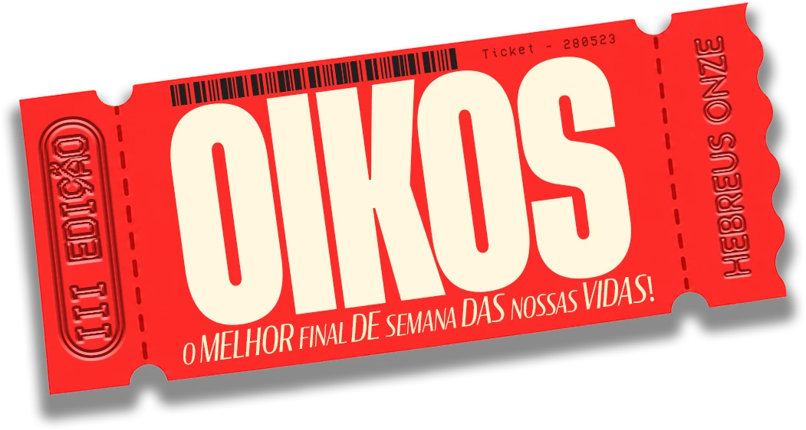
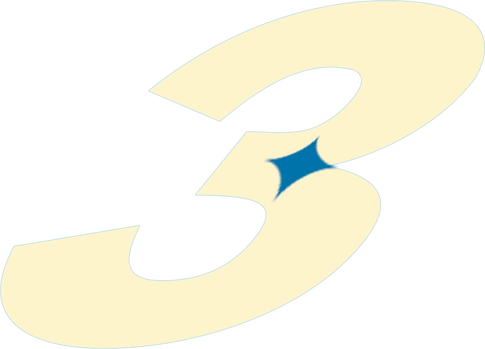

Palavra
Pregações e dimensões
Pregações que atravessam as diferentes dimensões da vida cristã, buscando o crescimento integral de cada participante.
apresenta
οἶκος do grego: casa, família, os que vivem sob o mesmo teto.


III Edição · Retiro anual do Hebreus Onze
Uma casa para quem crê no que não vê.
O retiro anual do Hebreus Onze. Um fim de semana de pregação, artes, oração e convivência para jovens e adolescentes viverem a fé em comunidade.
O que é o OIKOS
O OIKOS é o retiro anual do Hebreus Onze. Ele nasceu de uma moção: oferecer uma experiência nova para os jovens e adolescentes de Vila Velha, com foco no crescimento humano e espiritual.
De sexta à noite até domingo, pregações, dinâmicas, artes e oração se encontram. Encontristas e servos vivem juntos cada momento do fim de semana.
Em grego, oikos quer dizer casa. É esse o espírito do retiro: um lugar de acolhida, onde a fé é vivida em comunidade.
Cada experiência é vivida, e não apenas participada.
Uma experiência em diferentes dimensões
O retiro é construído sobre experiências que não são descartáveis. Cada uma tem um papel no fim de semana, e todas apontam para o mesmo encontro.
Palavra
Pregações que atravessam as diferentes dimensões da vida cristã, buscando o crescimento integral de cada participante.
Comunidade
Atividades de interação que aproximam quem chega, constroem vínculos e fazem nascer o sentido de comunidade e pertencimento.
Arte
Monólogos e interlúdios apresentados antes das pregações, criados para tocar os corações e preparar o ambiente para a mensagem.
Registro
Fotos e vídeos acompanham o retiro em tempo real e levam um pouco do espírito do OIKOS a quem não pôde estar presente.
Viva o OIKOS através das imagens
Oração, louvor, artes, bastidores e convivência. Registros do retiro feitos pela equipe de mídias do Hebreus Onze.
As imagens das edições do OIKOS chegam aqui em breve. Enquanto isso, acompanhe os registros no nosso Instagram.
Ver no InstagramJovens, se fores aquilo que Deus quer, colocareis fogo no mundo!
Quem prepara o OIKOS
Grupo jovem da Paróquia Nossa Senhora Aparecida, em Cobilândia, Vila Velha/ES.
Nascemos em 28 de maio de 2023, no encontro START. O grupo surgiu no coração do nosso fundador, Yuri Afonso, e caminha sob a orientação pastoral do pároco, Pe. Gudialace de Oliveira, para evangelizar e fortalecer a fé e a vivência cristã entre os jovens.
Somos um grupo católico que acredita em uma juventude avivada, com a fé como base de tudo e a alegria do Senhor no peito. Acreditamos em um avivamento que transforma de verdade e gera mudança de vida.
A fé é o fundamento da esperança, é uma certeza a respeito do que não se vê.
Tudo sob a ação do Espírito Santo, na busca de uma conversão genuína e de uma profunda experiência com o Paráclito.
De forma criativa, acolhedora e moderna. Na música, na dança e no teatro, na oração, nas redes sociais e na convivência, testemunhando com a própria vida a alegria de ser jovem e católico.
Seis ministérios servem juntos para que a missão aconteça: Artes & Dança, Infraestrutura, Mídias, Música, Pregação e Intercessão, e Tios.
Um pouco da nossa caminhada
Cada encontro, missão e edição do OIKOS faz parte da mesma história de fé.
28.05.2023
O encontro START marca o início da caminhada do grupo na Paróquia Nossa Senhora Aparecida, em Cobilândia, Vila Velha/ES.
A caminhada continua no dia a dia do grupo.
Acompanhe em @hebreusonzeInformações do retiro
Retiro anual do Hebreus Onze
Quer participar do OIKOS ou entender melhor como ele funciona? Chama a equipe no WhatsApp. A gente tira suas dúvidas e explica os próximos passos.
Quero saber como participarVocê vai abrir uma conversa com o número .
Responderemos pelo contato que você informar.